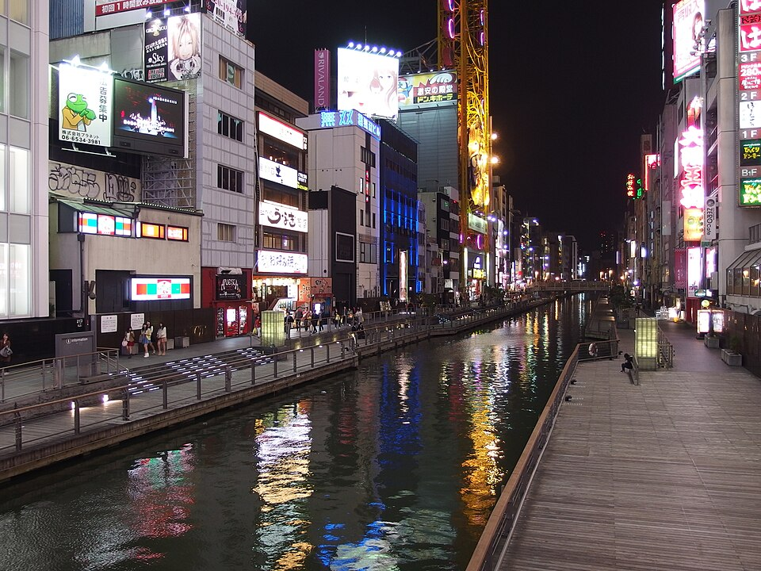
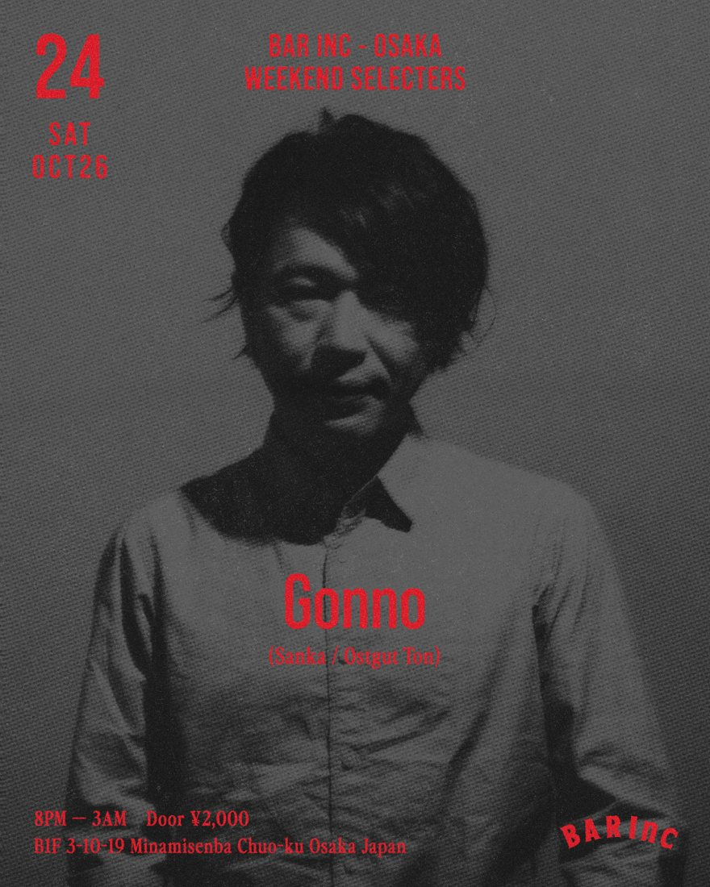

3 готовых плана по району неона: Dotonbori, Hozenji, Ura-Namba, Shinsaibashi · 31 фото · проверено 24.10.2026 ~14:00 JST · все места Осаки
🌤 Погода: вечером сухо, ~21°, дождь 7-18% (Open-Meteo). 🚇 Туда: от отеля 5 мин до станции Umeda, линия Midosuji (красная), платформа 1, на Nakamozu → Shinsaibashi 7 мин / Namba 8 мин. 🚇 Обратно: последний поезд Namba 00:10 → Umeda 00:19 (Shinsaibashi 00:12), платформа 2, на Shin-Osaka (Yahoo, сб 24.10). Позже - такси, ~4 км, водителю: ホテルグランヴィア大阪. маршрут до Namba
A
Рекомендую
Фэнси: ужин → вид с 36 этажа → клуб
Классика пятницы-субботы в Minami: окономияки, неон, бокал над городом под живую музыку, потом клуб у канала. Около 2,7 км пешком за вечер.
🚇 Старт: Метро до Namba (8 мин), выход к Dotonbori, 5 мин до моста.
118:45
Ebisubashi и вывеска Glico
Прогулка
Wikimedia Commons · そらみみ · CC BY-SA 4.0Wikimedia Commons · DXR · CC BY-SA 4.0

Wikimedia Commons · Guilhem Vellut from Annecy, France · CC BY 2.0Wikimedia Commons · lumoplank · CC0
4 фото →
Центр неона: мост через канал Dotonbori, бегущий человек Glico (с 1935 года). Отсюда во все стороны улицы с огнями.
Wikimedia Commons · Rickard Törnblad · CC BY-SA 4.0
2 фото →
Давняя (老舗) окономияки-лавка Dotonbori, по гидам 6 лет подряд в Michelin Bib Gourmand. Фирменное - yamaimo-yaki на тесте из горного ямса, готовят на плите-теппане. Часто очередь - лучше прийти к 19:00. Фото - окономияки в Осаке вообще, не сам Mizuno.
Бар на самом верхнем этаже отеля над станцией Namba, 147 м, панорама на весь город. В соседнем зале Table36 по субботам 20:00-22:30 играет живая группа (Chroma Band). Самый поздний бар с видом в Minami.
Часы
сб 15:00-24:30, последний заказ 23:45
Цены
в ценах уже 13% сервис и налог; сбора за вход на сайте нет
Большой клуб в доме Nakaza Cuidaore, 5 этаж, прямо у моста. Музыка по гидам смешанная (диско, хаус, поп, EDM), туристы и местные - проще всего познакомиться. На крыше руфтоп NAKAZA SKY TERRACE.
Часы
клуб 22:00-04:00 (до 22:00 там шоу)
Вход
билеты через Klook / GetYourGuide / Viator / Trip.com, цену не смотрел
Один из главных клубов Осаки (с 1999), свой руфтоп-терраса на 4 этаже. Сегодня вечеринка MISHMASH: диджеи парами (B2B), хэллоуинская, жанр в анонсе не указан. Дресс-код smart casual, в выходные без шорт.
Сегодня
23:00-05:00
Вход
2 500 ¥; иностранцам 1 500 ¥; до 23 лет 2 000 ¥ с Jägermeister (офиц. сайт)
🏨 Домой: такси ~4 км до отеля, или метро из Namba до 00:10.
B
Для музыки
House-музыка: от Gonno к deep house до утра
Если хочется именно хорошей электроники, а не пафоса. Места маленькие, андеграундные; публика пришла за музыкой.
🚇 Старт: Метро до Shinsaibashi (7 мин), 4 мин пешком до BAR Inc. Поесть заранее (например, в Shin-Umeda Shokudogai у отеля).
120:00
BAR Inc - Gonno (house / techno)
Клуб / DJ

Флаер 24.10, Resident Advisor
Музыкальный бар с хорошим звуком. Сегодня WEEKEND SELECTERS: Gonno - один из главных японских диджеев house и techno, выходил на Ostgut Ton (лейбл Berghain), International Feel, Beats In Space. Андеграунд, не пафос.
Вечеринка deep house с видеоартом в маленьком клубе Teranoma Tidepool (Ikeume Bldg, 4 этаж). Гость из Кореи Ruud в 01:00. О самой площадке в сети почти ничего - формат маленький, локальный.
Один из главных клубов Осаки (с 1999), свой руфтоп-терраса на 4 этаже. Сегодня вечеринка MISHMASH: диджеи парами (B2B), хэллоуинская, жанр в анонсе не указан. Дресс-код smart casual, в выходные без шорт.
Сегодня
23:00-05:00
Вход
2 500 ¥; иностранцам 1 500 ¥; до 23 лет 2 000 ¥ с Jägermeister (офиц. сайт)
Спокойно: прогулка, ужин, местные бары, бокал с видом
Посмотреть неон без спешки: крытая улица, мост, набережная, фонари Hozenji, ужин и стоячие бары Ura-Namba, в конце - вид с 36 этажа. Около 3 км пешком.
🚇 Старт: Метро до Shinsaibashi (7 мин) и пешком на юг по крытой улице.
118:30
Shinsaibashi-suji - крытая улица
Прогулка
Wikimedia Commons · そらみみ · CC BY-SA 4.0Wikimedia Commons · そらみみ · CC BY-SA 4.0
2 фото →
Длинная крытая пешеходная улица от станции Shinsaibashi прямо к мосту Ebisubashi, вечером людно.
Wikimedia Commons · Kansai explorer · CC BY 3.0Wikimedia Commons · Kristoffer Trolle from Copenhagen, Denmark · CC BY 2.0Wikimedia Commons · Maarten Heerlien from Voorschoten, The Netherlands · CC BY 2.0
3 фото →
Пешеходная набережная вдоль канала Dotonbori ниже уровня улицы: огни отражаются в воде, тише, чем наверху.
Wikimedia Commons · Lianguanlun · CC BY 4.0Wikimedia Commons · Rickard Törnblad · CC BY-SA 4.0
2 фото →
Давняя (老舗) окономияки-лавка Dotonbori, по гидам 6 лет подряд в Michelin Bib Gourmand. Фирменное - yamaimo-yaki на тесте из горного ямса, готовят на плите-теппане. Часто очередь - лучше прийти к 19:00. Фото - окономияки в Осаке вообще, не сам Mizuno.
Бар на самом верхнем этаже отеля над станцией Namba, 147 м, панорама на весь город. В соседнем зале Table36 по субботам 20:00-22:30 играет живая группа (Chroma Band). Самый поздний бар с видом в Minami.
Часы
сб 15:00-24:30, последний заказ 23:45
Цены
в ценах уже 13% сервис и налог; сбора за вход на сайте нет